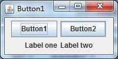
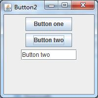

本部分是对GUI中的事件注册进行讨论，初始的代码如下：
//:com/gui/start/Button1.java
package com.gui.start;
import javax.swing.*;
import java.awt.*;
public class Button1 extends JFrame{
private JButton
b1 = new JButton("Button1"),
b2 = new JButton("Button2");
private JLabel
label1 = new JLabel("Label one"),
label2 = new JLabel("Label two");
public Button1() {
setLayout(new FlowLayout()); //每加入一个控件，都会从左到右，从上到下分布
add(b1);
add(b2);
add(label1);
add(label2);
}
public static void main(String[] args) {
// TODO Auto-generated method stub
SwingConsole.run(new Button1(), 200, 100);
}
}

上述的代码显示的效果很简单，即一个Frame中布置了两个Button和两个Label，但是为了使得Button具有交互意义，必须为其注册事件，即下面的Button2.java那样：
//:com/gui/start/Button2.java
package com.gui.start;
import javax.swing.*;
import java.awt.*;
import java.awt.event.*;
public class Button2 extends JFrame{
/**
*
*/
private static final long serialVersionUID = -5828712884530293792L;
private JButton
button1 = new JButton("Button one"),
button2 = new JButton("Button two");
private JTextField txt = new JTextField(10);
class ButtonListener implements ActionListener { //定义事件监听器，使用匿名类是一个不错的选择
@Override
public void actionPerformed(ActionEvent e) {
// TODO Auto-generated method stub
String name = ((JButton)e.getSource()).getText();
txt.setText(name); //内部类可以访问外部类的private成员
}
}
public Button2() {
setLayout(new FlowLayout());
add(button1);
add(button2);
button1.addActionListener(new ButtonListener()); //注册事件
button2.addActionListener(new ButtonListener());
add(txt);
}
public static void main(String[] args) {
// TODO Auto-generated method stub
SwingConsole.run(new Button2(), 200, 200);
}
}

Button2实现了Button的交互效果，当鼠标点击任意一个Button时，TestField会显示Button中的字符串，任何事件都需要实现ActionListerner接口实现，然后在相应的控件中使用addActionListener进行事件注册。而接下来的Button2b则是使用匿名内部类实现了Button2相同的效果，感觉代码量更少并且更加清晰。
import javax.swing.*;
import java.awt.*;
import java.awt.event.*;
public class Button2b extends JFrame{
private JButton
button1 = new JButton("Button 1"),
button2 = new JButton("Button 2");
private JTextField txt = new JTextField(10);
private ActionListener bl = new ActionListener() { //使用匿名内部类实现事件监听
public void actionPerformed(ActionEvent e) {
String s = ((JButton)e.getSource()).getText();
txt.setText(s);
}
};
public Button2b() {
button1.addActionListener(bl);
button2.addActionListener(bl);
setLayout(new FlowLayout());
add(button1);
add(button2);
add(txt);
}
public static void main(String[] args) {
// TODO Auto-generated method stub
SwingConsole.run(new Button2b(), 200, 200);
}
}